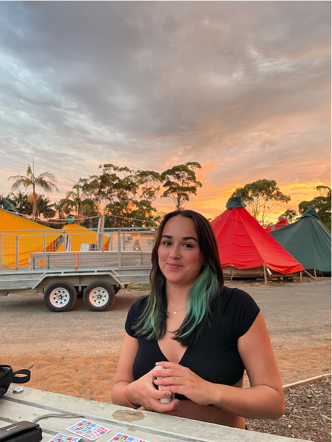

OM MIG

EMMA PEDERSEN
Jeg er 22 år, grønhåret og studerer multimediedesign på KEA. Jeg har længe været interesseret i webdesign og arbejde med branding og grafisk design, så jeg er super spændt på at kaste mig ud i denne verden og lære så meget jeg kan. Jeg er motiveret, har før arbejdet med sociale medier og har et øje for, hvad der trender i verden. Jeg er målrettet i mit arbejde, men er også en der går op i at skabe den gode stemning.
| Kompetencer | HTML, CSS, JS og Github | Adobe Illustrator, Adobe Premier Pro, Adobe After Effects |
|---|---|---|
| SoMe Erfaring | Instagram for KVIK Kastrup Vandpolo | Tiktok for Lagkagehuset |
| Uddannelse | Tårnby Gymnasium 2018-2021 | Sankt Petri Skole 2008-2018 |
Fang mig på min mail, emma@internetconsult.dk, eller på min instagram @emmapdrsen!